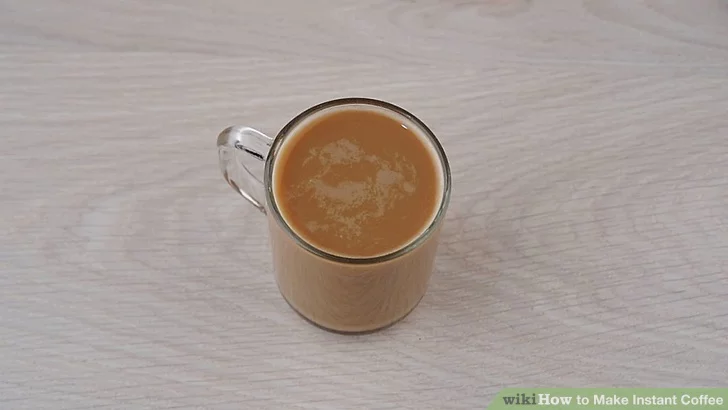

Instant Coffee

Descrption
Instant coffee is great when you need a pick-me-up but don't have a coffee maker. Unlike ground coffee, instant coffee granules are made from dehydrated brewed coffee. Although this means you can't make the actual granules at home, instant coffee is still an easy, tasty way to get your caffeine fix!
Ingredients
- 1 cup (240 mL) hot water
- 1 to 2 teaspoons instant coffee
- 1 to 2 teaspoons sugar (optional)
- Milk or creamer (optional)
- Cocoa, spices, or vanilla extract (optional)
Steps
-
Heat up a cup of water
To heat a cup of water quickly and easily, microwave it for 1 minute.[2] You could also heat it on the stovetop using a pot or kettle. Heat it over medium-high heat, then take the water off of the stove just before it starts to boil.
- For 1 serving, heat 1 cup (240 mL) of water. Use more water if you want to make additional servings.
- Using a kettle will make it easier to pour the hot water into your mug.
-
Add 1 to 2 teaspoons of instant coffee to a mug
container’s label to see how much you should use to get the best taste. Most companies recommend using 1 to 2 teaspoons for 1 cup (240 mL) of water.
-
Dissolve the coffee with a tablespoon of cold water
Mixing the coffee with a bit of cold water gently dissolves it. Gently dissolving the coffee instead of shocking it with hot water will improve the flavor.
-
Pour the hot water into the mug
Add the water carefully, especially if you’re not using a kettle. Remember to leave room for milk or creamer if you don’t like your coffee black.
-
Mix in sugar or spices, if desired
For a richer coffee flavor, add sugar or spices after mixing the coffee with hot water. If you’d like, add a teaspoon of sugar, cocoa powder, cinnamon, or allspice.
-
Add milk or cream if you’re not a fan of black coffee
Spoon dairy milk, almond milk, or another non-dairy option, cream, or flavored creamer into your coffee. The right amount to use depends on how light or dark you like your coffee.
- You can also skip the milk or creamer and drink your instant coffee black.
-
Stir your coffee and serve it
Give the coffee a good stir before enjoying it or serving it to someone else. Mix it until it’s uniform in color to evenly blend the milk and sugar (if you’re using them).